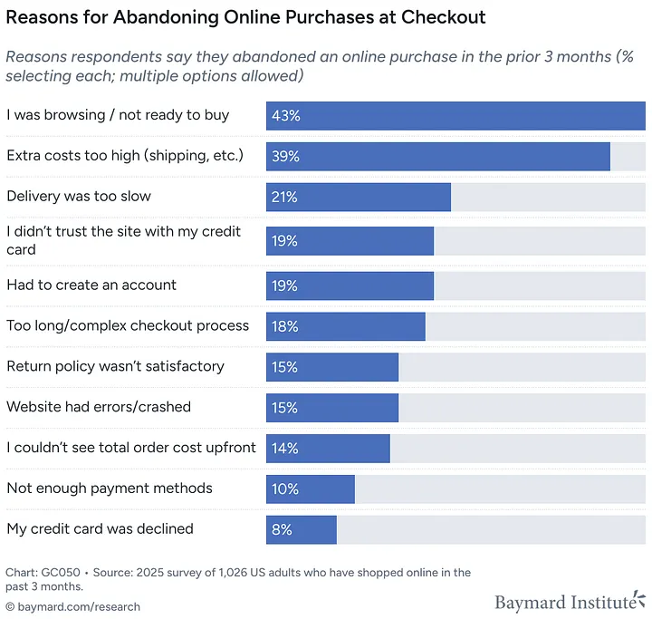
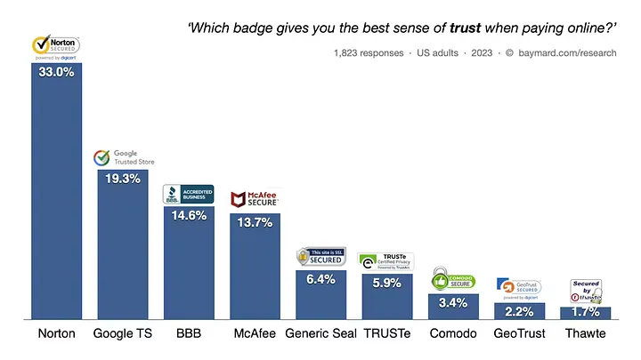
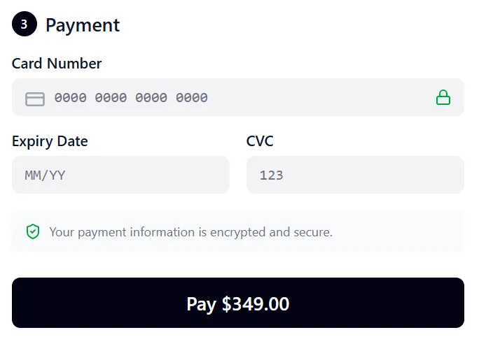
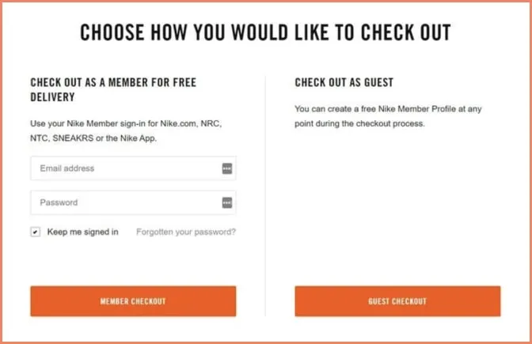
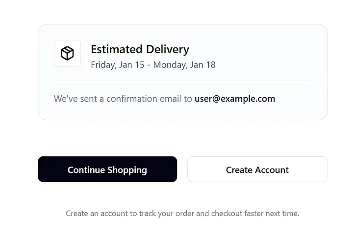
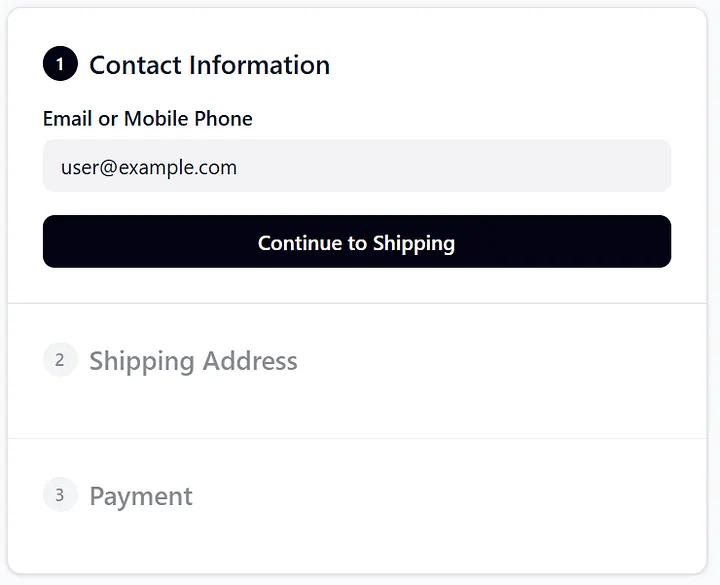
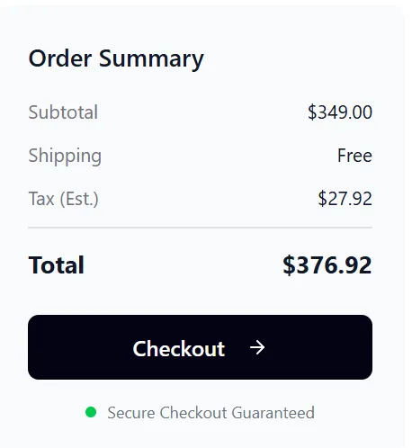
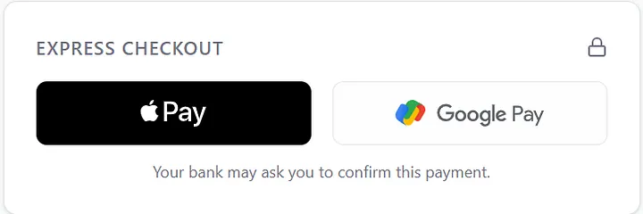

~70%+
Mobile traffic share
Ecommerce UX Case Study
How I reduced mobile cart abandonment by simplifying checkout, building trust, and removing friction.
Problem
~70%+
Mobile traffic share
~2.9%
Mobile conversion rate
~70%
Cart abandonment at checkout
The business was losing revenue because mobile checkout abandonment (~70%) and low mobile conversion (~2.9%) were significantly underperforming expected benchmarks.
Goal & Scope
Research & Insights
Reference review: Amazon, Shopify, Stripe
Move account creation after payment confirmation.
Information -> Shipping -> Payment to reduce perceived length.
Lock icon and secure microcopy directly under Pay Now action.
Top checkout abandonment reasons


Design Strategy
Block 1 - Trust
Trust anxiety reduced willingness to complete payment.



Block 2 - Account Creation
Users resisted registration during checkout.
Block 3 - Complex Checkout
Too many visible fields increased cognitive load and form errors.

Final Design Showcase


Impact
24%
Reduced Mobile Cart Abandonment
Primary outcome reported in the case study.
+Checkout
Improved Completion Confidence
Trust signals and microcopy reduced hesitation moments.
Faster
Reduced Checkout Time
Progressive disclosure, validation, autofill, and wallets removed friction.
WCAG AA
Accessibility-Driven Scope
Checkout components were improved with accessibility compliance in mind.
Key Takeaways
Conclusion
When most users arrive on mobile, each forced login, unclear trust cue, and extra field silently taxes revenue. In this case study, meaningful improvement came from making checkout feel safer, shorter, and more respectful of user time.